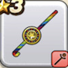

マジカルスティック
攻略班 5.0点 / バギマ
くわしい特徴
【レベル別習得スキル】 Lv1バギマ（消費MP：15）はげしい竜巻で敵全体にバギ属性の呪文小ダメージを与える Lv21エレメント系へのダメージ+5% Lv30かいふく魔力+5 【限界突破スキル】 1凸じゅもんダメージ+5% 2凸じゅもんダメージ+5% 3凸じゅもんダメージ+5% 4凸じゅもんダメージ+5%

攻略班 5.0点 / バギマ
【レベル別習得スキル】 Lv1バギマ（消費MP：15）はげしい竜巻で敵全体にバギ属性の呪文小ダメージを与える Lv21エレメント系へのダメージ+5% Lv30かいふく魔力+5 【限界突破スキル】 1凸じゅもんダメージ+5% 2凸じゅもんダメージ+5% 3凸じゅもんダメージ+5% 4凸じゅもんダメージ+5%